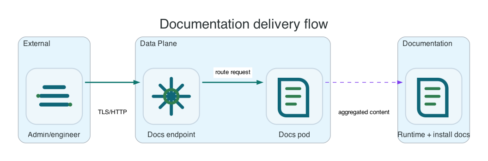

Reference / Platform
Documentation delivery.
Li9 S3 documentation is delivered as one endpoint per installation, with shared runtime documentation and platform-specific installation or operator content shown together.
Delivery Model

| Mode | Runtime Docs | Platform Docs | Endpoint |
|---|---|---|---|
| OpenShift Operator | Runtime docs image/content. | Operator docs image/content. | S3Documentation Deployment, Service, optional Route. |
| Helm | Runtime docs content. | Helm docs content. | Helm-managed docs workload or static chart output. |
| Linux | Runtime docs content. | Linux package docs content. | Host-served static docs or package artifact docs. |
| Windows | Runtime docs content. | Windows package docs content. | Host-served static docs or package artifact docs. |
OpenShift Documentation CR
cat <<EOF | oc -n li9-s3-runtime apply -f -
apiVersion: storage.li9.com/v1alpha1
kind: S3Documentation
metadata:
name: li9-s3-docs
spec:
replicas: 1
exposure:
route:
enabled: true
tls: true
host: ""
docs:
runtime:
title: Li9 S3 Runtime Documentation
operator:
title: Li9 S3 Operator Documentation
EOF
oc -n li9-s3-runtime wait --for=condition=Ready s3documentation/li9-s3-docs --timeout=10m
oc -n li9-s3-runtime get s3documentation li9-s3-docs -o jsonpath='{.status.url}{"
"}'Endpoint Verification
After the documentation CR is Ready, verify both the root site and runtime section through the published URL.
DOCS_URL="$(oc -n li9-s3-runtime get s3documentation li9-s3-docs -o jsonpath='{.status.url}')"
curl -fkI "$DOCS_URL/"
curl -fkI "$DOCS_URL/runtime/"Content Model
The documentation endpoint is intended for administrators and engineers. It contains installation ownership, prerequisites, configuration surfaces, verification steps, upgrade and uninstall impact, troubleshooting entry points, and runtime usage guidance without requiring source-code context.